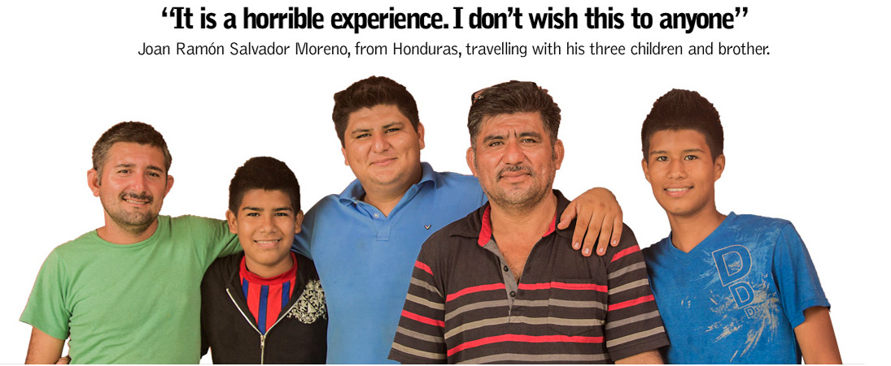
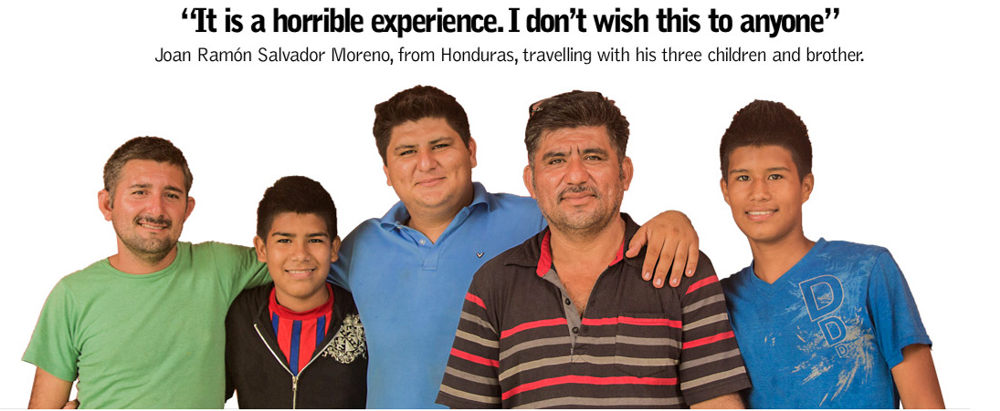
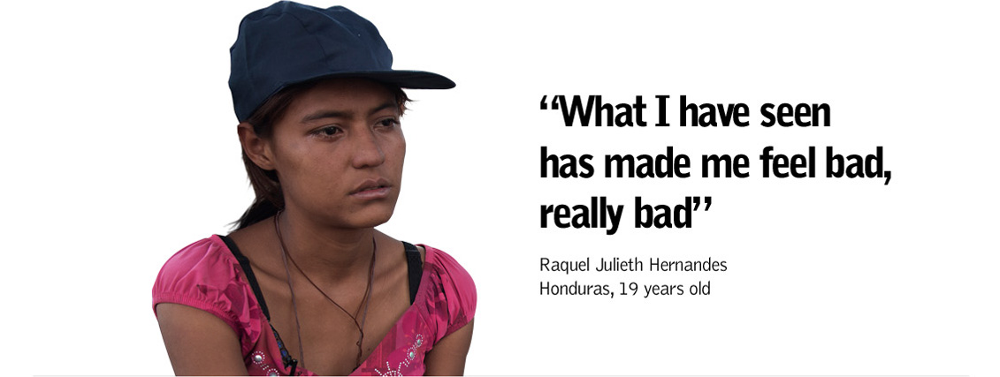
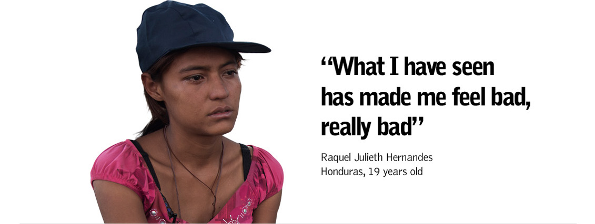

"Please, spare our lives."
In a rice field in southern Mexico, next to the Guatemalan border, Juan Ramón Salvador Moreno begs for clemency. Stripped of his clothes and belongings, he’s lying down on the ground next to his three sons and his brother, all of them tied up by armed men. The criminals force them to stay in this position, in this lush green area in Chiapas, while they search their bags. They ask them not to move, but Juan Ramón’s brother is deaf and mute, and doesn’t understand what’s going on: his agitation prompts a barrage of kicks to his body.
- “Obey them! Do not move!” Juan Ramón tells his family.
- “If you raise your head again I will put it down with a bullet,” shouts one of the armed men.
 

Much has been written about the migration crisis at the border between the US and Mexico, but for the Central Americans chasing the American dream danger starts long before, namely at the southern border of Mexico. The states of Chiapas, Tabasco, Campeche and Quintana Roo, which border with Guatemala and Belize, comprise 1,149 kilometres of rainforest, rivers and mountains: a tough prelude to an odyssey whose final destination is the US.
Juan Ramón chose the Pacific route, one of the most crowded. Raised in San Pedro de Sula, a city with one of the highest crime rates in the world, he left Honduras and entered into Guatemala, reaching the Suchiate river, which he crossed with his family. They have just stepped into Mexico, in Chiapas state: a harsh stretch of land where they could be detected by security forces or become victims of organised crime, crooks or the very same security agents. The family were travelling in a Kombi (minibus) but soon had to get out in order to go around a checkpost and avoid a migration control. It was there, in the rice field, where they were assaulted by armed men and then abandoned. It is an area where robberies and sexual violence are common, but necessary to cross in order to reach Arriaga, the first town in the south-west from where to climb aboard the metallic shell of the migrant-carrying freight train, known as The Beast.
But the Mexican government wants them off the train. In July, the authorities launched a plan to contain migration and prevent them from boarding The Beast, arguing that this mode of transport makes them more vulnerable. MSF’s teams, strategically positioned at several spots along the route located beside the tracks, have seen a sharp drop in the number of migrants in the area: many of them have been forced to flee towards the hills or the brush, to search for alternative routes similar to those taken by Juan Ramón and his family when they were attacked. Now, it is much more difficult for humanitarian organisations to reach the migrant population.
“Forbidding migrants to board The Beast will only appease the public conscience, because people won’t see them any more on the TV news. The problem is not the train, but the crooks and the criminal organisations taking advantage of them,” warns Pablo Marco, head of MSF operations in Mexico. “It is true that in the microcosm of the railway there is a dense web of extortion, crime and human trafficking, but this will only increase once the migrants search for other routes.” Almost six out of every 10 migrants treated by MSF had suffered one or more episodes of violence along the route, according to a survey conducted between July 2013 and February 2014. From now on, it will be more difficult to collect data, but the fact that these migrants are now less visible doesn’t mean that they are no longer exposed to danger.
58 per cent of the migrants treated by MSF suffered episodes of violence in Mexico.
Survey of 396 MSF patients conducted between July 2013 and February 2014. The migrants were treated in the centre and the south of Mexico.
The decision of the Mexican government comes after the media buzz created around the plight of migrant children. Around 57,000 undocumented minors were arrested at the US-Mexican border from October 2013 to June 2014, according to US officials. Images of unaccompanied children being picked up near the US border have been seen all over the world, but not of their earlier route, often completed with the help of a guide or coyote. The human drama starts before, long before reaching this border of over 3,000 kilometres of concrete, sand and patrols unable to stop the migrants, who are always in search of new routes even if they are more dangerous. On their way through Mexico, women and children are the most vulnerable. Lately, they are being seen more frequently and they are also facing more dangers, like Juan Ramón’s children, mugged in the rice field.

The Suchiate river, on the border between Mexico and Guatemala. The Central American migrants cross it on small boats. It's the beginning of their tough journey through Mexico.

Ciudad Hidalgo is the first town many migrants see when they enter Mexico from Guatemala after crossing the Suchiate river. The train doesn't work from here, so they need to walk for hours.

Migrants are carrying small backpacks with them. It would be impossible to travel with more weight.

The cargo train used by the migrants to travel within México, known as The Beast. Arriaga is the first stop of the route along the Pacific coast.

Sometimes the migrants have to wait for hours or days because of the delays of the cargo trains.

Every few days, a train arrives to Ixtepec with hundreds of migrants. They wait for a few hours or days and then they go on.

Families, women and unaccompanied children travel on The Beast and try to make it to the United States. They are the most vulnerable among the migrants.

The albergue or house of the migrants in Ixtepec. Here the migrants make a stop of hours or days and get ready until the next train leaves. Now they are watching a World Cup match: France vs Honduras.

The migrants don't have much time to enjoy along the route. In this 'albergue' or house of the migrants in Ixtepec, they gather to play football.

The journey is tough and dangerous. Almost 60 per cent of the migrants treated by MSF in Mexico have suffered episodes of violence along their route.
Julieth Hernandes Alvarado, from Honduras, set foot alone in Mexico, on the Pacific route. The 19-year-old was selling food in Tapachula, near the Guatemalan border, and the same day she received her salary a group of men mugged her and beat her up. Fearing deportation, Julieth didn’t seek any medical help, even though Mexican law stipulates that migrants can receive emergency medical care in any public healthcare centre. A few weeks later, Julieth traveled a few hundred kilometres to the north, and reached Lechería, next to the capital. Now, together with a young man who decided to join her on the route, she recalls the attack.
 

Julieth left her 2-year-old baby behind in her country. Rejected by its father, the baby is now being taken care of by Julieth’s mother. Julieth migrated because she was looking for a better life, but so far she hasn’t been lucky. Now, she urgently needs to earn money. After recovering from the injuries she suffered, she now finds herself caught in a middle ground: she can continue and catch the train to the north, taking one of the routes leading to Tijuana, Nogales, Juárez, Nuevo Laredo… or she can wait for a while around México DF and look for a job. Neither of these options will be easy. An estimated six out of ten migrant women suffer episodes of sexual violence on the route. It is difficult to gather precise data, but the fact that many women and girls have contraceptive injections before their departure speaks volumes about the magnitude of the abuses. All the main actors are involved: criminal organisations use sexual violence as a weapon to extort women or their families to pay ransoms once they are kidnapped, while the coyotes often force women to have sex with them in exchange for guiding them to the north.
The legal response to the massive human rights violations in this part of the globe is weak, a key issue being the legal status of migrants deciding to exit the country. The violence committed by maras (gangs) in Central America is forcing thousands of people out of the region. Among MSF patients in Mexico, 42 per cent of the Salvadorans and 32 per cent of the Hondurans said violence-related issues played a decisive role in their decision to leave.
Should those fleeing the maras have the right to asylum both in Mexico and other countries of the region? “Yes,” answers MSF’s coordinator in Mexico, Marc Bosch. “Even though the situation in many of these countries doesn’t match the definition of armed conflict, the consequences on the population do have a resemblance: forced internal displacement, crossing of borders to flee violence, a huge impact on mental health and cases of sexual violence,” he says. There is no response by the different states to this harsh reality. A conservative estimate based on the data gathered by MSF about the role of violence in the decision to migrate shows that tens of thousands of people could be eligible for asylum every year in Mexico or the US. However, in 2013 there were only 1,296 applications in Mexico, with just 270 of them accepted by the Mexican Commission for Refugee Aid (COMAR). In fact, in its twelve years of existence, COMAR has only given refugee status to 1,756 people, even though hundreds of thousands have entered Mexico fleeing the violence raging in Central America.
A significant percentage of the migrants going through Mexico are ignorant of their rights and the laws in place to help them. For those who have suffered violence on the route, there is a not very much used legal tool – the humanitarian visa – which allows the migrants to stay in Mexican territory without fear of being arrested. The problem is that the process to get it requires the migrants to register a complaint against the attackers and stay in a fixed place, even though their priority is to go on to the north. This is another example of the legal vulnerability of this population.

Mario René Murillo and Fredid Salinas, 29-year-old and 25-year-old Hondurans
These two young men just entered into Mexico after crossing the Suchiate river. They are in Tapachula, near the Guatemalan border, and want to make it to the US. It is not the first time they have tried: a few weeks ago they were deported by the Mexican authorities when apprehended in this same area.

Yenny Guardado, 26-year-old Salvadoran
“It is not worth leaving your children alone just to chase a dream.” Yenny departed with her partner with the intention of reaching the US. Her two daughters stayed in El Salvador. After her first experience on the train, she asked the Mexican authorities to return her to El Salvador. She can’t go on.

Gustavo Adolfo Godoy, 25-year-old Guatemalan
He already knows what it is like to be jailed in the US. He was arrested in Arizona after trying to cross the border several times. Now, he wants to go to Canada. In the albergue of Ixtepec, Gustavo makes fabric flowers and sells them to earn a living.

Byron Solares, 34-year-old Guatemalan
He lived in the US for three years but had to go back to Guatemala for personal reasons. When he wanted to go north again, he suffered an accident. He was on The Beast and was escaping from men who were trying to rob him. He fell off the train and lost a leg.
Lack of information, fear of being deported, applications stuck in the bureaucratic machine… Legal limbo is the most common situation of the migrants trying to make it to the US. The message of the system is clear: better to try the backdoor. As receiving countries, both Mexico and especially the US should wake up to the new reality: the massive human rights violations in Central America are affecting large sections of society. The concept of refugee is still associated one way or another with war, and it is a politically-charged word which many states want to avoid. The Central American migrant abandoning his country threatened by the maras doesn’t care how his status in a country is defined, but his story is not so different from that of the Syrian fleeing the violence perpetrated by the Syrian army or armed opposition groups. “In Honduras, they don’t even spare a woman selling five pounds of corn tortillas,” says Juan Ramón. “They make her pay the war tax too.”